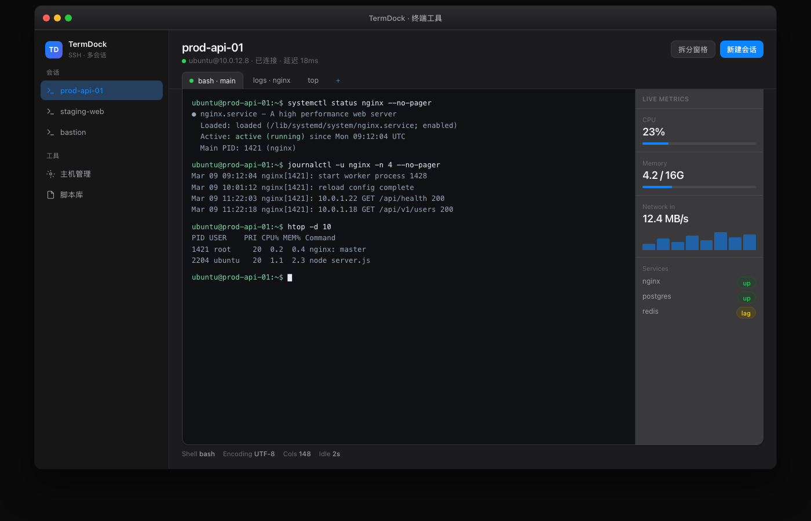
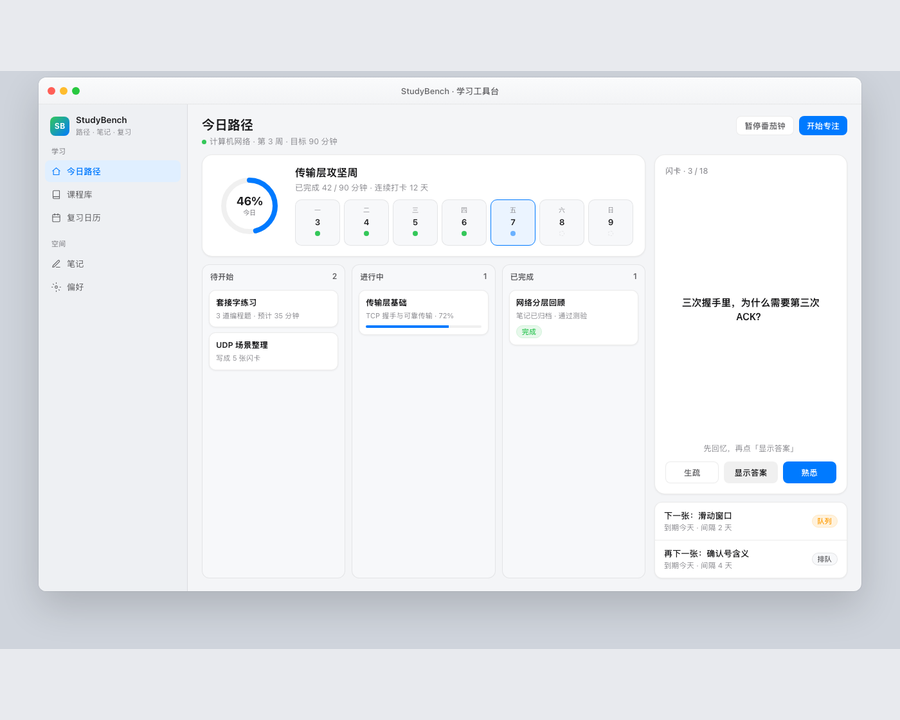
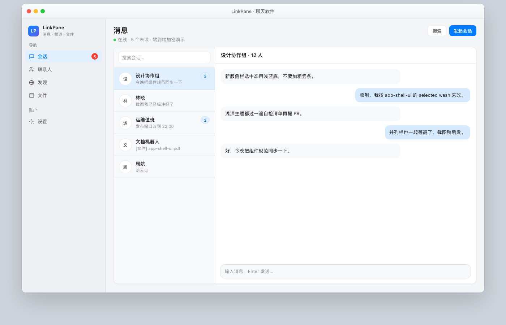
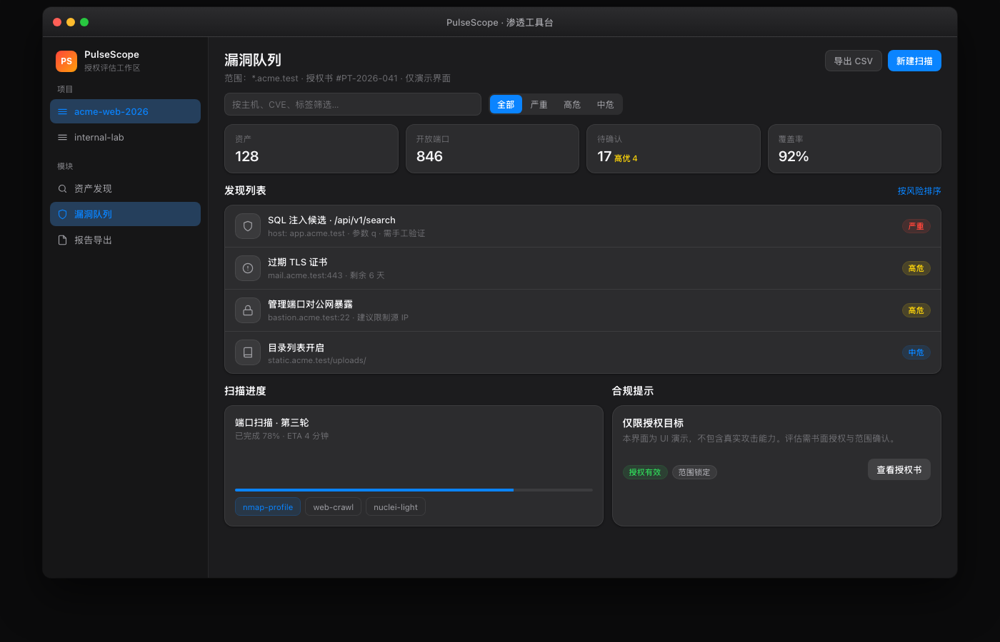

Operations / Terminal
TermDock
A dense SSH workspace that keeps sessions, command output, and host health visible without breaking terminal focus.
Open prototypeIndependent product UI studies
A working index of four interfaces shaped around distinct jobs, densities, and interaction patterns.

Featured / TermDockEach entry links to its working prototype. The images are direct captures of those prototypes, not presentation mockups.
Operations / Terminal
A dense SSH workspace that keeps sessions, command output, and host health visible without breaking terminal focus.
Open prototypeLearning / Workbench
A study workspace balancing the current lesson, review queue, and quick capture inside one stable task canvas.
Open prototype
Communication / Messaging
A three-column conversation client with compact navigation, scannable threads, and a focused message pane.
Open prototype
Operations / Security
A security operations console that separates authorized scope, the active queue, and tool readiness.
Open prototype
The archive uses the same evaluation order for every interface: job, hierarchy, then visual treatment.
Define the primary action and the state a person must judge before allocating space.
Keep navigation stable, protect the main canvas, and bound long collections deliberately.
Check real content, keyboard focus, themes, narrow screens, and overflow in the browser.
Structure carries the task. Color, type, and motion should make that structure easier to read.